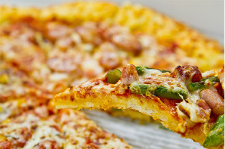

2026.05.01
チーズアカデミーの卒業生が新しいショップをオープンしました。
チーズ職人養成学校「チーズアカデミーTOKYO」
チーズアカデミーについて
チーズアカデミーは、チーズ職人養成学校です。
チーズの素晴らしさを、自ら制作を通じて、伝えることができる知的、技術的なプロを養成し、
そして、チーズを心から愛するチーズ職人を、一人でも多く世の中に送り出したい。
そんな思いから、チーズ職人養成学校「チーズアカデミーTOKYO」は歩みを始めました。
未経験、チーズを自分のバックグラウンドに持ち込みたいこと。
チーズに対する熱意がある皆様を、全力でサポートします。



未経験からでもエキスパートになれる、カリキュラムは全部で3つの専門コース。
独自チーズのプロデュースの仕方を、ゼロから学びました。

チーズアカデミーでは、本格的な農園を使った実地研修を行います。チーズづくりの原点であるミルクを出す牛の飼育環境から学び、実際に農園に足を運び、土づくりからチーズの生産までを実践的に学んでいきます。現場での経験は、将来職人を目指す方々にとって大きな財産となるはずです。

チーズ作りには、しっかりとした知識も必要不可欠です。本校では、チーズアカデミーの、一流の講師陣による講義形式で体系的にチーズの歴史や製法、栄養学からマーケティングに至るまで、チーズに関することをしっかりと学ぶことができます。座学で学んだ知識を、現場での実習に活かすことで、より深い理解へと繋がることでしょう。

本校での全課程を修了した暁には、最終卒業制作として、自身のこだわりが詰まったオリジナルチーズを制作します。卒業制作では、一人ひとりの個性と想いを込めた作品を、外部の専門家や一流シェフを招いたテイスティング審査を行います。自身の技術を披露するだけでなく、客観的な評価を得ることで、プロフェッショナルとしての確かな一歩を踏み出すことができます。
ニュース
2026.05.01
チーズアカデミーの卒業生が新しいショップをオープンしました。
2026.04.15
5月開催のオープンキャンパスの予約受付を開始しました。
2026.03.30
「世界のチーズコンテスト」で本校の講師が入賞しました。
会社概要
| 学校名 | チーズアカデミーTOKYO |
|---|---|
| 事務所所在地 | 〒160-0022 東京都新宿区新宿 1-2-3 新宿ビル3F |
| TEL | 03-1234-5678 |
| FAX | 03-1234-5679 |
| dummy@cheese-academy.jp |
説明会申し込み・お問い合わせ
ぜひ一度、お子様連れでも大歓迎です！体験説明会にお越しください。
その他、お問い合わせもこちらで承っております。